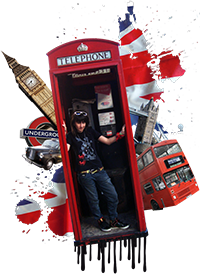

 London is one of the greatest cities in the world; rich in history, culture, fine cuisine, and shopping. However no trip to the great city would be complete without venturing into a London pub. Pub culture has been thriving in London for centuries, and in every style imaginable; from the dark, wooden pubs filled with boisterous workmen, to the genteel and elaborate Victorian pubs. Central London is a great place to have a pint, especially around West End and Covent Garden. For those who are more adventurous, head towards Farringdon Station and down the streets of Clerkenwell